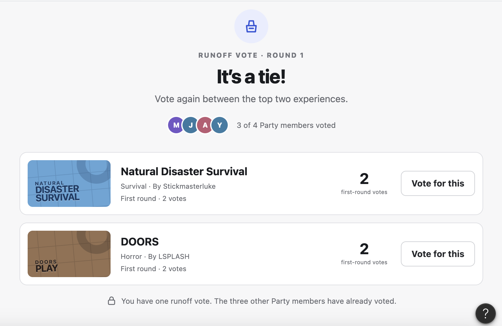
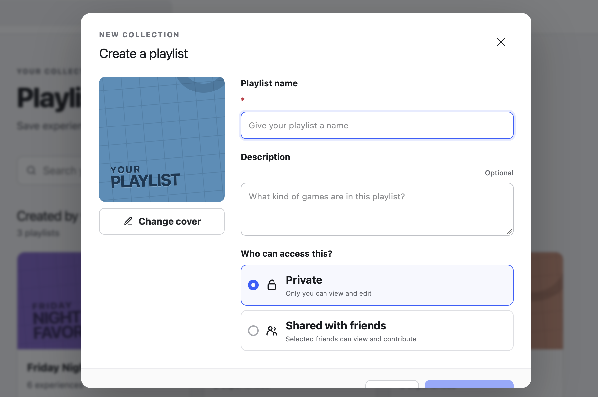

03 · Product Concept
Roblox —
Playlists
A shared playlist concept that helps friends organize Roblox experiences, vote when needed, and launch a selected game through Party.
Independent concept project. Not affiliated with Roblox.
- ROLE
- Product Designer
- FORMAT
- Independent concept
- FOCUS
- Collaboration + group decision-making
- PROTOTYPE
- Figma Make
deciding, and playing together.


The problem: choosing what to play is often a group decision.
When friends want to play Roblox together, the group may spend time searching separately, sharing suggestions, and deciding which experience fits the mood before anyone starts playing.
Roblox Playlists extends the idea of saved experiences beyond personal Favorites. A player could create themed collections—such as Horror Nights, Fashion, or Friday Night Favorites—and choose whether to keep them private or build them with friends.
The distinction is not simply another way to bookmark games. Playlists organize experiences around a purpose or occasion and can support group contribution and decision-making when those features are useful.
The question I designed around was: how can friends collect game ideas and decide what to play together without adding unnecessary friction to a casual play session?
Designing the playlist to work individually or collaboratively
The playlist needed to remain useful even when no collaboration was required. A user can start privately, save experiences, and later share the collection if friends want to contribute.
Once shared, friends can add suggestions, see who contributed each game, vote when needed, and reorder the collection. Collaboration is optional so the feature can support both personal organization and group planning.
Balancing collaboration with simplicity
A shared playlist is only useful if it makes game selection easier. Requiring every group to create a playlist, invite collaborators, and vote before each session could make a casual decision unnecessarily complex.
For that reason, the collaborative features are optional. A playlist can remain personal, become shared later, and use voting only when the group needs a structured way to decide.

The first-round result remains visible while only the tied experiences advance. The winning game becomes Next Up, followed by a final confirmation before Party launches the experience.
From selection to Party launch
The prototype follows the full flow from seeing friends online to opening a shared playlist, managing collaborators, choosing a game, and launching it through the existing Party.
Playlists sit near the current Party on Home so the feature is connected to the user’s immediate context. The group can move from being online together to choosing what to play without opening a separate planning flow.

Inside a shared playlist, everyone can see the order, who contributed each experience, current vote counts, what is Next Up, and the option to play without leaving the collection.

When creating a playlist, the user decides whether it starts private or shared. Collaboration remains optional rather than being required for every collection.
Once the group chooses a game, a final confirmation shows which experience will launch for the existing Party.
Building it in Figma Make
Figma Make allowed me to move beyond static screens and test the main interactions: creating a playlist, adding and removing experiences, inviting collaborators, voting, reordering, and handing the selected game into Party.
AI-assisted prototyping made it possible to iterate quickly on those behaviors. My focus was defining when collaboration should be optional, how voting should resolve disagreement, and where the Playlist experience should end so Party can take over.
COLLECT → VOTE → PLAY TOGETHER
The working prototype helped me evaluate how collection, voting, and Party launch fit together as one flow.
What I would test next
The next question is whether a shared playlist makes game selection meaningfully easier for real groups of friends.
Future testing would focus on how friends currently suggest games, whether themed collections feel distinct from Favorites, and when voting feels useful rather than too formal for a casual session.
I would also evaluate whether the runoff and final confirmation remain quick enough when a Party is already online and ready to play. The feature should support the decision without turning it into a process that needs to be managed.